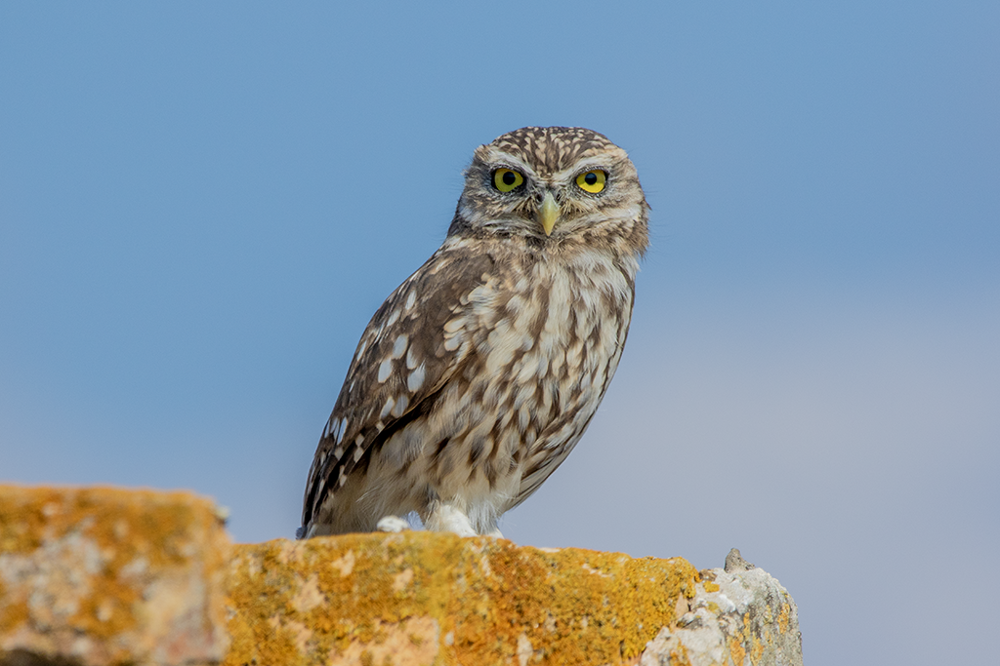

Athene noctua — Une petite chouette résidente de divers milieux arabes, active la nuit et au crépuscule, parfois visible le jour
Identité et reconnaissance
La Chevêche d’Athéna, Athene noctua, appartient aux Strigidés; les références saoudiennes l’appellent aussi sada. Un corps trapu, une queue courte et une tête large paraissant aplatie s’associent à des yeux jaunes et des sourcils clairs qui lui donnent un air sévère. Son plumage brun à gris-brun est ponctué de blanc dessus et strié dessous. Elle peut rester visible le jour sur un rocher, un arbre ou un bâtiment, hochant la tête lorsqu’elle est attentive. L’espèce occupe divers milieux d’Afrique du Nord, du Levant, d’Arabie et d’une grande partie de l’Eurasie.
Âge, sexe et espèces proches
Les sexes portent un plumage semblable; les femelles tendent à être légèrement plus grandes, avec un large chevauchement des mesures. Les jeunes ont des plumes plus souples, courtes et relativement pâles; l’aspect du visage et les dessins évoluent avec la croissance et la mue. La tête large sans aigrettes saillantes, le dessus tacheté et le vol ondulant aident à la distinguer des petits Otus de silhouette différente. Les teintes varient selon régions et sous-espèces, beaucoup d’oiseaux des milieux secs étant relativement pâles. Déterminer une sous-espèce demande lieu et caractères détaillés, la couleur seule pouvant tromper.
Milieux, alimentation et comportement
Milieux semi-ouverts, terres agricoles, vergers, terrains rocheux et semi-déserts offrent des habitats, avec cavités et postes d’affût. L’activité est particulièrement marquée au crépuscule et la nuit, mais la chasse peut aussi se dérouler en plein jour. Les proies comprennent coléoptères et autres invertébrés, petits mammifères, reptiles et oiseaux, capturés depuis un perchoir ou après une courte poursuite terrestre. Sa petite taille s’accompagne d’une grande souplesse alimentaire. Une végétation basse facilite l’accès aux proies; vieux arbres, murs et fissures procurent abris et sites de reproduction proches.
Reproduction et cycle de vie
Les œufs sont déposés dans une cavité, comme une fissure rocheuse, un trou d’arbre ou un bâtiment; le site peut être réutilisé. La référence saoudienne décrit généralement une nichée de trois à cinq œufs, environ 28–33 jours d’incubation et 30–35 jours au nid. La femelle incube et soigne les petits pendant que le mâle apporte la nourriture; les deux parents participent davantage aux soins lorsque les jeunes grandissent. Ces repères varient selon populations et conditions. Les couples peuvent rester dans leur territoire toute l’année, tandis que les jeunes se dispersent pour s’installer ailleurs.
Répartition et saisonnalité dans le monde arabe
Au Liban, la liste de 2020 décrit une résidente nicheuse dans de nombreuses régions montagneuses et la Beqaa; la liste jordanienne mentionne également la résidence. En Arabie saoudite, elle est une nicheuse résidente répandue mais peu commune, fréquentant terrains rocheux bas et cultures. AviList 2026 montre une forte différenciation régionale: glaux en Afrique du Nord; saharae dans certaines parties du Maghreb, de l’ouest égyptien et de l’Arabie; lilith à l’intérieur du Levant jusqu’au sud du Sinaï; bactriana jusqu’en Irak. D’autres sous-espèces occupent la côte soudanaise et la Somalie. La fin octobre correspond à une présence résidente; la visibilité peut varier avec l’activité et la dispersion locale des jeunes plutôt qu’avec l’arrivée de migrateurs lointains.
Écologie et conservation
La chevêche consomme rongeurs et invertébrés dans les réseaux trophiques naturels et agricoles; elle a besoin simultanément de proies et de cavités sûres. AviList 2026 indique « Préoccupation mineure » à l’échelle mondiale, alors que des déclins documentés touchent certaines populations européennes en lien avec les habitats et ressources. Conserver arbres creux, sites rocheux et bordures riches en proies la favorise. Une observation calme et distante permet de l’apprécier tout en préservant la tranquillité des reposoirs et nids.
Références
AviList Core Team — The Global Avian Checklist, v2026
British Trust for Ornithology — Little Owl: identification, ecology and conservation
British Trust for Ornithology — Little Owl Monitoring Guide
RSPB — Little Owl
Saudipedia — Little Owl (2023), citing The Birds of Saudi Arabia
Ramadan-Jaradi and colleagues — Updated checklist of the birds of Lebanon, Sandgrouse 42 (2020)
Jordan BirdWatch — Jordan Bird List (2020)
UK Little Owl Project — Spotter’s Guide
Photo : Carlo Caimi — CC0-1.0.